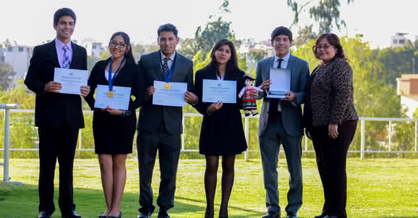
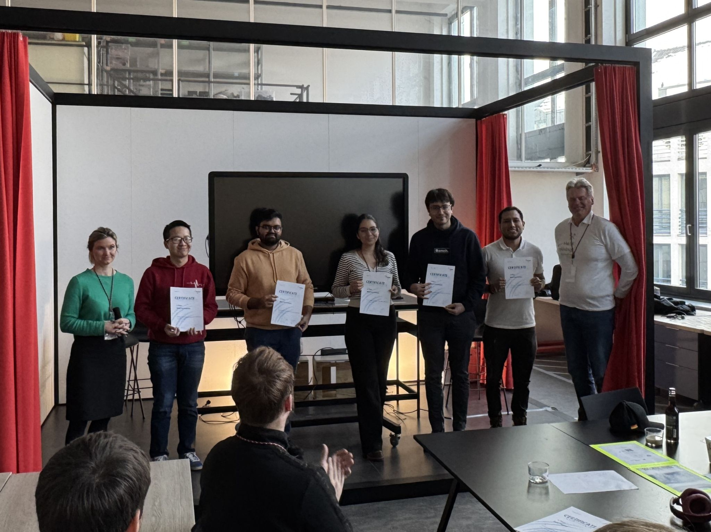
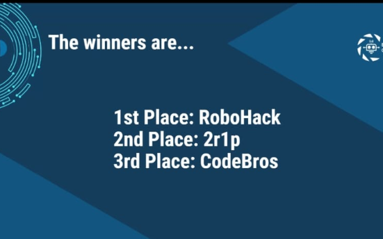

Hello there! 👋
I’m a Peruvian robotic engineer specializing in AI and robotic systems. For my master’s thesis, I developed a real-time navigation controller for mobile robots, integrating motion capture systems, LIDAR, SLAM, C++, and ROS to enhance mapping accuracy and efficiency in industrial applications. Currently, I work as an assistant researcher at the WZL Institute, where I design advanced algorithms for robotic perception and picking tasks using a UR10 manipulator and an Intel depth camera.
Beyond robotics, I have deep expertise in artificial intelligence. I develop and train Large Language Models (LLMs) with 45 billion parameters for AI agent integration, leveraging frameworks like TensorFlow, PyTorch, and Keras. During my internship at Siemens, I gained hands-on experience deploying and optimizing machine learning techniques for AGV localization using SIMATIC RTLS signals based on UWD technology. These experiences have equipped me with a strong foundation in AI, robotics, and software engineering, with proficiency in Python, SQL, C++, and extensive experience with Linux, ROS, Docker, SolidWorks, Git, and microcontrollers.
I’m also passionate about innovation and entrepreneurship. I have contributed to several tech development projects, winning national competitions for tech startups and hackathons. I thrive in dynamic, forward-thinking environments where creativity and problem-solving drive meaningful change. My goal is to be part of a team that not only pioneers innovation but also shapes the future—one that challenges me to grow while making a tangible impact in AI and robotics. Below find some highlights of my recent achievements:
🏆 Startup Competition Win
🏅 Hackathon Victory
🏆 EESTECH Final Round Winners

📄 Current Research
Autonomous Clustering Based Task Allocation and Robot Base Placement - Currently being written